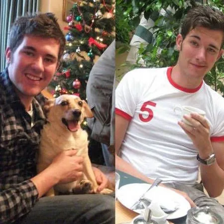

Okay, like you, I was reading these testimonials and thinking what does this guy, Mike Kirk, have to offer me? Can Mike give me results? Can Mike help me stay in the results? Two words — HELL Yeah!  I do admit that with some trepidation when I was meeting with him for my consultation that I thought he would be one of those personal trainers that are only after your money and give you a bog-standard fitness programme that’s not tailored to your needs. Fortunately, I was wrong!
He certainly does give you a fantastic first impression and within the consultation, I was very surprised that he was heavily focused on your nutrition and your diet running alongside exercise and lifestyle (which is just as important).
This I likey! Too often I was found to be eating too much and eating the wrong sorts of food and from the moment meeting Mike (or Mikey, I like to call him to wind him up!) I ditched the wrong foods and started eating much more healthily and enthusiastically in correct portions, and I have not been diverted since then. Mike also checks up on your diet on a weekly basis to ensure you are eating the correct foods and somehow… somehow, he made me convince myself to slap on an alcohol ban on myself! The good diet, Mike said, is your first line of attack to your crouching stomach and expanding waist. Within a week, I saw great results and I haven’t even started properly exercising yet!
 The following week I met up with Mike to go through my strengths as he said ‘a tall, good-looking guy like me’ (I may have embellished that saying) should be toned up and adding muscle but because I chose to lose weight first, he was incredibly supportive.
The following week I met up with Mike to go through my strengths as he said ‘a tall, good-looking guy like me’ (I may have embellished that saying) should be toned up and adding muscle but because I chose to lose weight first, he was incredibly supportive.
We discussed my attitudes to food, lifestyle and exercise; and looking back, he was actually employing cognitive therapy on me! It worked! I have such a positive attitude to exercise and especially towards food. You could wave a chocolate cake, or a full English breakfast under my nose and I’ll still reach for the fruit salad!
Throughout the first couple of weeks, Mike was assessing my strengths and weaknesses and brought me a specific, tailored fitness plan to me. He also explained where I was lacking in muscle groupings and their cause and effect (particularly my triceps…which explains why before I couldn’t do one press-up to save my life!) and wanted to strengthen my muscles alongside my cardio activities which he also advised me to go on to help with my weight loss. He was very supportive of me when discussing my cardio activities such as aerobics, circuits, box fit etc and particularly to his chagrin… bollywood dancing! All contribute to good weight loss.
With Mike on his sessions, we went through strengthening my muscles in a wide variety of ways in preparation for muscle tone up after my weight loss programme and I always get results afterwards. My friends often tell me I look leaner, more muscular and happily comment on my arms, which I’m insecure about, as despite numerous attempts to get my freakishly thin arms bigger before I met Mike, this time they are slowly getting bigger week by week and I’ll happily display them in my t-shirt even if it’s in cold weather…I’m that confident now!
Even though it has been 5 weeks with him, I have amazingly lost a stone and a half in weight; a leaner body which have resulted in a complete change in my wardrobe as I’ve lost 7 inches round my waist; have got bundles of confidence and positivity, great attitudes to diet and fitness and much more ambition than ever before! And that’s though Mike’s advised diet, Mike’s fitness programme, Mike’s 24/7 support, and basically the creature that is Mike himself!
It’s a far cry from what I was like just after Christmas – feeling overweight, don’t know what to do with my life, awful diet, negative attitude to exercise and low esteem. And within a few weeks that has all changed for the better.
So I tell you now, book a consultation with Mike and let the good times roll!
Ed Rex Travel Blogger — Rexy Edventures